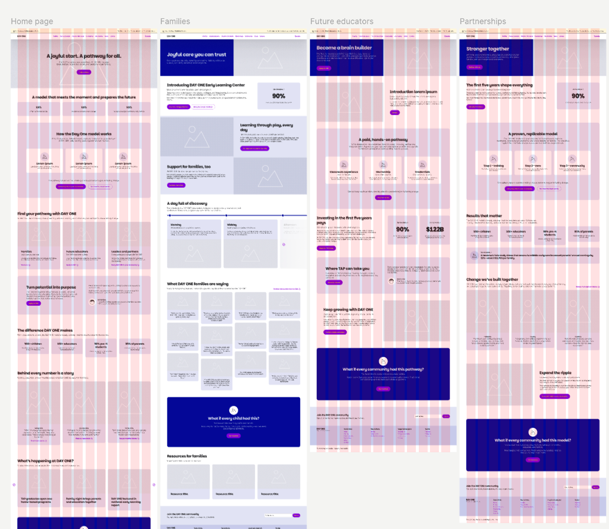
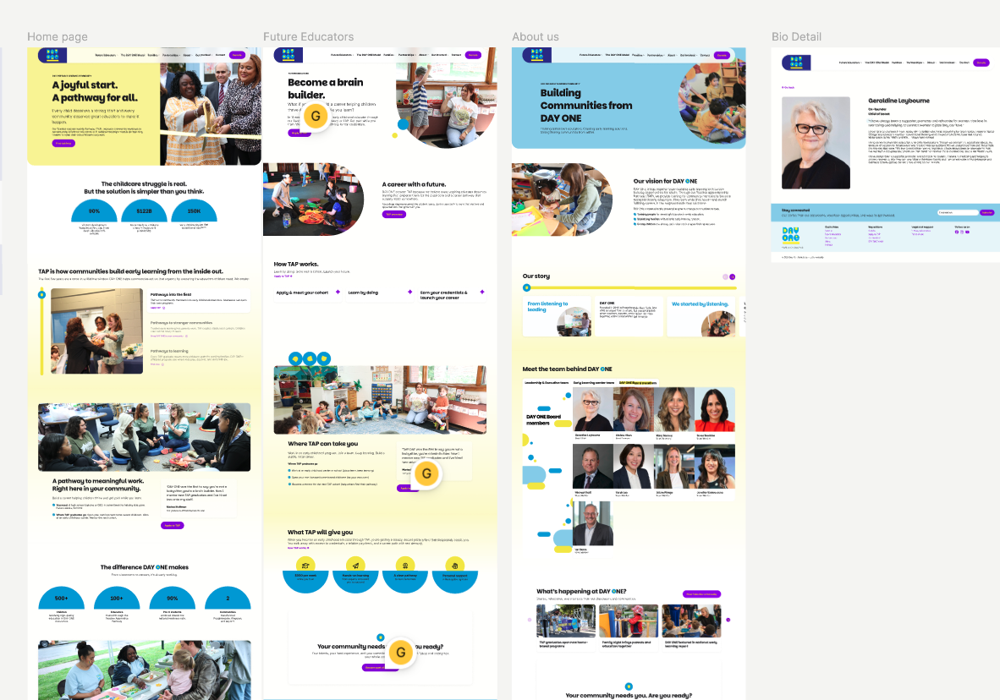
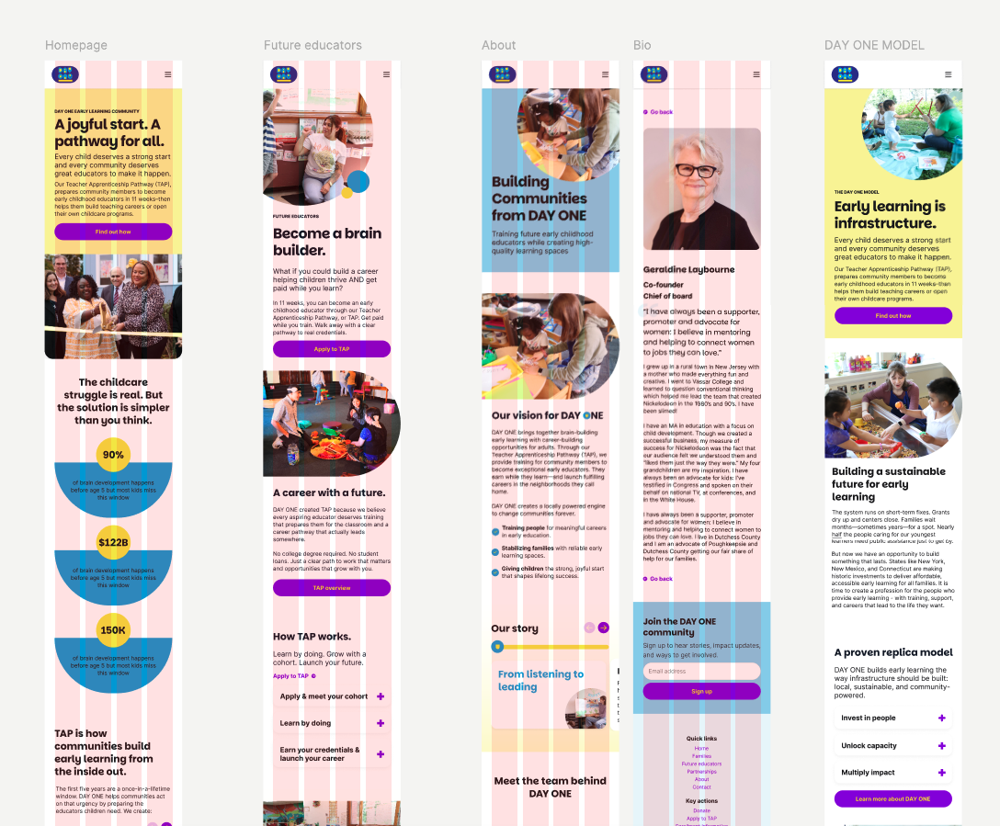
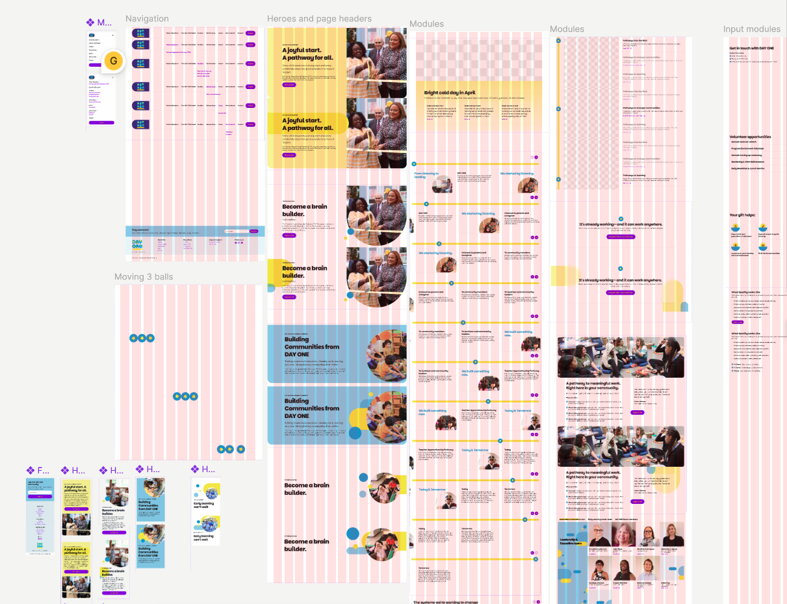

A joyful start, redesigned.
A full website redesign for DAY ONE Early Learning, a non-profit championing early childhood education through its Teacher Apprenticeship Pathway. I redesigned the site end-to-end — homepage through Families, Future Educators, Partnerships, About, Bio, and the DAY ONE Model — from early wireframes to a full modular Figma component system.
[ Overview ]
DAY ONE's site had to speak to three very different audiences in one place — families looking for care they can trust, future educators considering the Teacher Apprenticeship Pathway, and partners weighing up a community investment. Each needed their own clear route in, without the site feeling fragmented.
It also had to carry some genuinely persuasive numbers — 90% of brain development happening before age five, a $122B economic case, 150K children reached — without turning into a wall of statistics. The brand's palette and playful visual identity needed to do a lot of that heavy lifting.
Sector
Non-profit / Early Learning
Tools
Figma, FigJam
Deliverable
Full site redesign + component library
Status
Design approved, in handoff
[ Process ]
Mapping Three Audiences
I ran discovery sessions to understand how families, future educators, and community partners each needed a different entry point, message, and call to action — and how the homepage could route each of them cleanly.
Structural Wireframes
Lo-fi wireframes across the homepage and every core section — Families, Future Educators, and Partnerships — to lock the content order and page structure before any visual design started.
Colour & Content Exploration
I tested how the brand's yellow, blue, and purple palette could carry visual hierarchy — making the headline stats (90%, $122B, 150K) land as moments, not just numbers buried in copy.
Full Screens, Every Page
Refined, final screens across the Homepage, Future Educators, About, and Bio pages — balancing the brand's warmth with the clarity a mission-driven audience needs.
Modular Component System
Navigation variants, hero and page-header modules, content modules, and input modules — all built as reusable Figma components so DAY ONE's team can extend the site without starting from scratch.
[ Working Files ]




[ Outcome ]
The DAY ONE team was thrilled with the redesign. From the first structural wireframe through to final component handoff, the process ran smoothly, and the result reflects the warmth and clarity their mission needed. Work file is confidential but I'm always happy to walk through it.